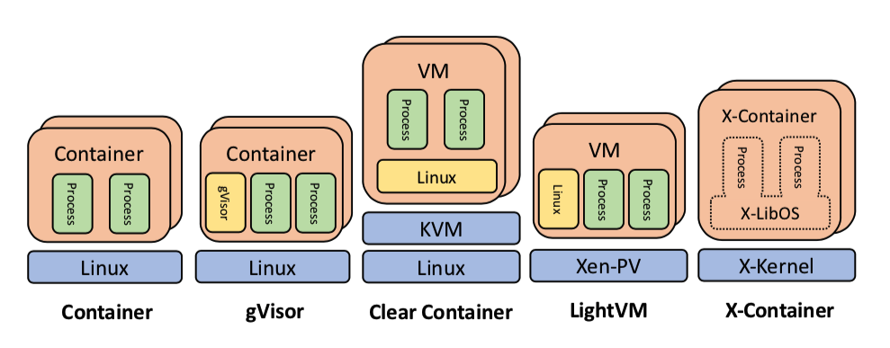
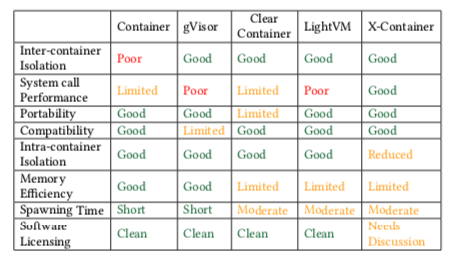
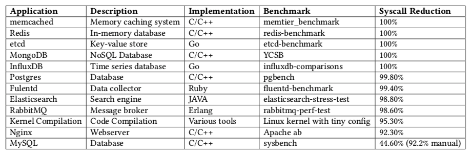
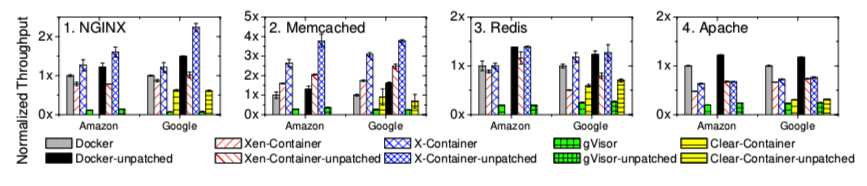
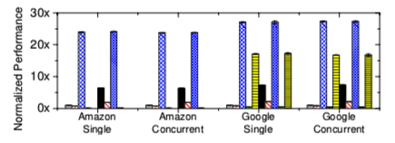
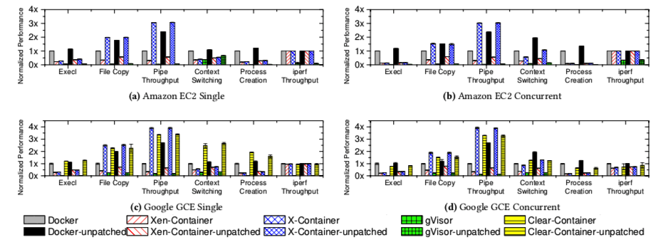
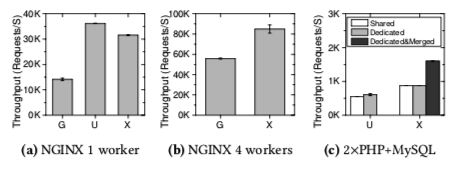
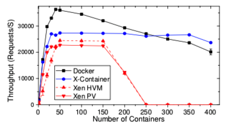
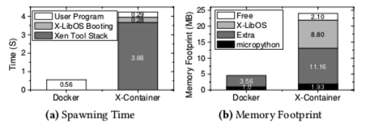

本周介绍一篇ASPLOS‘19的文章，文章针对容器隔离性不足的问题，提出了基于LibOS的容器隔离解决方案
文章来源
X-Containers: Breaking Down Barriers to Improve Performance and Isolation of Cloud-Native Containers (ASPLOS’19)
简介
云原生容器平台已经成为生产云环境必不可少的一部分。在云原生架构中，容器应用的设计需要遵循“Single Concern Principle”，即每个容器只关注一件事情并且把这件事做好。但是当前同一台主机上的容器间隔离性仍然存在很大的问题。现在的工作主要分为两种类型，一种是直接加强容器隔离型，例如用户态内核gVisor；另一种是使用虚拟机，将容器打包进虚拟机，借助虚拟机的强隔离，加强容器隔离性。第一种方法在性能方面存在很大的问题，第二种方法在一些厂商的云平台中无法运行（一些虚拟机需要硬件辅助虚拟化，而一些云平台不支持嵌套硬件虚拟化），即使能够运行性能也很差。作者提出一种基于库操作系统（LibOS）的平台：X-containers，为容器提供隔离并且不需要硬件虚拟化支持。X-container中支持多地址空间和并行多进程，在同一个X-container中的进程间不再提供安全隔离。
X-containers作为新范式的思考
Single-concerned containers
只有Single-concenred容器才能充分发挥Kubernetes提供的自动部署、扩展和运维。因此向single-concerned容器的转变已经在很多云基础设施中出现，例如ECS和Google container engine。但是single-concerned并不等于single-process，因此single-concerned容器仍然需要并行多进程的支持。
重新思考隔离边界
现代操作系统为了支持多用户和多进程提供了多种隔离机制：Kernel isolation（保证进程不能危害内核的完整性并且不能获取内核的敏感信息）和Process isolation（保证进程不能轻易地互相访问和危害）。Kernel isolation的代价太大，因为系统调用的handler必须进行各种安全检查。随着内核功能的增加，对应的安全检查就会越来越多，导致代价越来越大。Process isolation的问题在于进程本身并不完全是为了安全隔离而设计的。进程经常被用来做资源的共享、并行并且为了支持这些进程特性，操作系统提供了超越隔离的接口，包括共享内存、共享文件系统、信号、用户组和debugging hook。
作者重新思考了什么功能属于内核以及安全的边界在哪里的问题，认为exokernel架构（外内核）才是既能够保证最小的内核攻击面同时能够提供高性能的选择。同时认为进程应该被用来管理资源和并行，安全隔离应该从进程模型中去除。因为现在应用的安全隔离很多都是从编程语言角度（强类型）和应用逻辑（基于角色的访问控制、权限和加密）的角度实现的，并不依赖底层的进程模型。

文章作者提出X-containers架构，在该架构中每个single-concerned容器运行在它自己的LibOS中，称之为X-LibOS。X-LibOS支持多进程，但该进程模型不支持隔离特性，只支持资源管理和并行。容器间隔离通过X-Kernel实现，X-Kernel是一个外内核，保证了极小的内核攻击面同时保证了很小的Trusted Computing Base（TCB）。
危害模型和设计的权衡（trade-off）
在X-containers模型中，同一个X-container中的进程是互相信赖的，并且也信赖底层的X-LibOS和X-Kernel。因此在这种架构下，系统面临的最大的威胁都是外部威胁。同时由于X-Containers是基于只提供隔离功能的小内核，因此X-Containers在实际使用中只会有更小的弱点。
X-Containers模型包含了多个trade-off。为了性能，容器内部的隔离（即进程间隔离）被解除，进程和X-LibOS的隔离被解除。不同容器间的隔离完全由X-Kernel保证。
X-container设计
使用LibOS运行容器的挑战
二进制兼容
并行多进程
使用Linux作为LibOS的原因
作者认为开发一个能够完全兼容Linux的X-LibOS的最好的方法就是利用Linux本身。虽然Linux内核被认为是一个通用内核，但是Linux内核支持高度定制和各种级别的抽象。Linux内核拥有数百个启动参数，数千个编译配置以及许多细粒度的运行时调整。同时大多数内核功能可以被配置为内核模块并且在运行时加载，因此一个高度定制的Linux内核可以是非常小同时性能也是很好的。例如，对于单线程应用（许多事件驱动的应用），关闭Symmetric Multi-Processing（SMP）特性能够极大的优化自旋锁操作，最终提升应用性能。
当前应用不能充分利用Linux内核能力的原因在于：1. 应用缺乏对内核配置的控制权限；2. 内核被多个应用共享，很难为所有应用调试到最佳参数。
使用Xen作为X-kernel的原因
相比Linux，Xen内核拥有更小的接口
Xen严格区分了内核态（Xen）和用户态（Linux）：在Xen半虚拟化中，所有需要root权限的特权操作都是被Xen执行的，Linux内核在低特权级运行。这样清晰的分界不再需要硬件虚拟化的支持。
Xen提供了客户机内核的可移植性：Xen隐藏了底层硬件的复杂性，所以客户机内核只需要提供半虚拟化设备的驱动即可，这些驱动可以在不同平台间移植。
多进程支持在客户机内核中实现：Xen只提供管理page table和环境切换的能力，内存和进程的管理策略完全由客户机实现。
Xen拥有成熟的生态系统：Linux保持了对Xen架构的支持，同时Xen拥有许多成熟的技术（在线迁移、容错、checkpoint/restore）。
限制和开放性问题

作者制作了一张比较各种架构的图，从图中可以看到X-Containers在内存、启动时间以及软件证书方面存在不足。
实现
移除内核隔离
作者修改了Xen半虚拟化架构，使得该架构不再提供客户机内核和用户程序间的隔离。X-LibOS被映射到用户程序的地址空间，X-LibOS和用户程序拥有相同的页表特权集和段选择器。因此对内核的访问不再引入客户机用户态和客户机内核态的环境切换，系统调用也可以以函数调用的方式实现。
并行多进程支持
X-Containers架构得益于Xen半虚拟化，天生支持并行多进程。Xen提供半虚拟化的CPU，Linux内核能够利用这层抽象定制自己处理中断，维护页表，刷新TLB的操作。Linux拥有使用虚拟CPU调度进程的完全能力，Xen决定虚拟CPU被如何映射到物理CPU。
自动化的轻量级系统调用
在x86-64架构中，用户态程序使用syscall指令来执行系统调用，这条指令会使得用户进程将控制权转交给内核。X-Kernel会立刻将控制权还给X-LibOS，保证用户程序能够未经修改就可以运行在X-LibOS上。由于X-LibOS和用户进程处于相同的特权级，因此更高效地处理系统调用的方法是使用函数调用。X-LibOS在vsyscall中保存了syscall entry table，这个页会被映射到每个进程的固定虚拟内存地址。为了避免重写和充编译应用，作者在X-Kernel中实现了在线自动二进制优化模块（ABOM）。这个模块能够在收到用户进程的系统调用请求时快速地完成syscall指令的自动替换，将需要中断的系统调用替换成函数调用。模块的替换目前只能识别三种系统调用模式。
轻量级的容器镜像启动
当启动一个新的X-Container时，一个特殊的bootloader会同时启动。这个bootloader会初始化虚拟设备、配置IP地址、创建容器进程。由于X-Container支持二进制级别的兼容，因此X-Container能够运行任何不经修改的Docker镜像。
作者使用Docker Wrapper将X-Container和Docker平台连接起来。运行在主机X-Container中的Docker引擎负责容器镜像的拉取和构建。作者使用devicemapper作为存储驱动。Docker Wrapper从Docker检索镜像的元数据，创建devicemapper设备并将其与X-Container连接起来。
测试
作者的测试主要回答以下问题：
How effective is the Automatic Binary Optimization Module (ABOM)?
What is the performance overhead of X-Containers, and how does it compare to Docker and other con- tainer runtimes in the cloud?
How does the performance of X-Containers compare to other LibOS designs?
How does the scalability of X-Containers compare to Docker Containers and VMs?
第一个问题

作者对12中典型应用进行了测试，除了MySQL之外，其他的应用的大部分系统调用都能够被正确的识别并被替换成更高性能的函数调用。而MySQL之所以效果不好，是因为它使用了libthread库，该库中的系统调用的实现模式无法被ABOM识别。作者使用了离线的工具，发现效果也能够提升到92.2%。
第二个问题

作者首先比较了X-Containers和其他方案在运行macro benchmark时的性能。可以看到X-Containers只在Apache应用的测试中表现不如Docker，这是因为Apache应用存在很多不同worker进程的环境切换。

X-Container在系统调用的吞吐量上性能优异。

作者还比较了X-Containers与其他方案在micro benchmark上的性能比较。发现X-Containers只在进程创建和环境切换方面性能不佳。
第三个问题

作者比较了X-Containers和其他unikernel的对比，结果X-Containers性能占优。
第四个问题

作者运行了一个NGINX+PHP容器，可以看到在实例较少的时候，容器的扩展性较好。但是随着实例数量的增加，X-Containers更好。这是因为每个NGINX+PHP容器实例包含4个进程，当有N个容器的时候，Docker平台的kernel需要调度4N个进程，而X-Containers仍然只需要调度N个进程。
X-Container启动时间和内存占用的测试

相关工作
针对当前容器隔离性不足的问题，解决方案主要分为两大流派。第一派是使用虚拟机，将容器包进虚拟机中，利用虚拟机的强隔离来加强容器的隔离性；第二派是加强容器本身的隔离性，代表工作是谷歌的gVisor，gVisor使用pTrace截获容器的系统调用，然后经过gVisor自己的处理后，返回给容器，可以看作是一种用户态内核。
我的总结
作者使用通过Xen半虚拟化和库操作系统的结构，构建了X-Containers架构。理论上解决了容器隔离性的问题，但是在启动时间和内存占用上还存在一些不足。作者工作最突出的地方在于使用Linux作为库操作系统，这是之前的工作完全没有想到的。使用Linux作为操作系统可以完美规避应用的兼容性和多进程问题，目前来看，这是一个非常好的解决方案。作者好像也去开公司去了，哈哈哈哈！